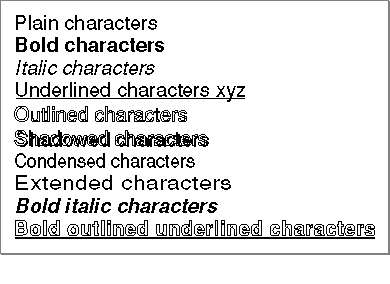
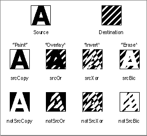

Legacy Document
Important: The information in this document is obsolete and should not be used for new development.
Important: The information in this document is obsolete and should not be used for new development.


Graphics Ports and Text Drawing
You draw text on the Macintosh in the current graphics port according to the graphics environment defined by the graphics port record. A graphics port defines where and how graphic and text drawing operations are to take place. QuickDraw treats the graphics port information as its primary set of global information.You can define many graphics ports on the screen, each with its own complete drawing environment, and easily switch between them. Because QuickDraw always draws in the current graphics port, it is essential that you keep track of which one this is.
Each graphics port is tied to a window. To draw in the graphics port of a window, you first need to make the port the current one. (You do this using the
SetPortprocedure, described in Inside Macintosh: Imaging.) The window whose port you want to draw in does not have to be active or the frontmost window. QuickDraw draws to the current graphics port identified bySetPort. You can draw to a background window or an inactive window by making its port the current one.There are two types of graphics ports: the original version (
GrafPort) that supports mainly black-and-white drawing with some rudimentary color capabilities and the color graphics port (CGrafPort), which supports all of the characteristics of the original graphics port, plus additional features including color facilities.Both types of graphics port records contain fields that specify the colors to be used for the foreground (
fgColor) and the background (bkColor) of a glyph. You can think of the foreground as the pixels that constitute the glyph, and the background as the pixels that surround the glyph. In terms of a black-and-white screen, the foreground pixels of a glyph are black, and the surrounding background pixels are white.The original graphics port provides eight colors--black, white, red, green, blue, cyan, magenta, and yellow; however, on a black-and-white screen nonwhite colors appear as black. A color graphics port provides a wide range of possible colors that allow you to portray all aspects of the user interface in color, including the representation of text. Both types of graphics ports maintain the fractional horizontal pen position, so that a series of text-drawing calls accumulates the fractional position. For the color graphics port, this value is maintained in a graphics port record field. For the original graphics port, this value is maintained in a
grafGlobal, which is reset whenever you reposition the pen.There is only one QuickDraw text-handling procedure that requires a color graphics port,
CharExtra. (Although you can callCharExtrafor an original graphics port without causing the system to crash,CharExtraproduces no result.) You can use all the other QuickDraw text routines with either an original graphics port or a color graphics port.Fields in the graphics port record determine which font QuickDraw is to use to portray the text, the font style, the font size, and how the bits forming the glyph are to be placed in the bit image. You control how the text is to be rendered by setting each of these fields before you measure or draw a segment of text that begins a new style run. QuickDraw provides procedures that let you set each field. To ensure future compatibility, you should always use these procedures rather than directly modify a field. You use the appropriate QuickDraw procedure to set the graphics port field for the style run to be drawn, if the current value of a field differs from the characteristic that you want QuickDraw to use. The following sections describe what each of these field values represents.
Font, Font Style, and Font Size
This section provides an overview of how QuickDraw and the Font Manager interact to provide the font that you specify in the graphics port to be used to render the text.The Font Manager keeps track of detailed font information, such as the glyphs' character codes, whether fonts are fixed-width or proportional, and which fonts are related to each other by name. When you make a call to QuickDraw to measure or draw text, QuickDraw passes the font request, including the font's size and style that you have set in the current graphics port, to the Font Manager, and the Font Manager satisfies the request as best as possible, returning to QuickDraw a bitmap of the glyph of the font, along with some information that QuickDraw uses for stylistic variation and layout. When QuickDraw receives the bitmap, it transfers the bitmap to the screen. If necessary, QuickDraw first scales the bitmap, or applies stylistic variation to it if the requested style was not intrinsic to the font.
The Macintosh supports two types of fonts: bitmapped and outline. A font is a complete set of glyphs in a specific typeface and style--and in the case of bitmapped fonts, a specific size. Outline fonts consist of outline glyphs in a particular typeface and style with no size restriction. The Font Manager can generate thousands of point sizes from the same TrueType outline font. For example, a single outline Courier font can produce Courier 10-point, Courier 12-point, and Courier 200-point. (You can read more about these two types of fonts and the relationship between QuickDraw and the Font Manager in the chapter "Font Manager" in this book. How the Font Manager responds to a QuickDraw font request is also explained in detail in the chapter "Font Manager," and summarized later in this chapter.)
When multiple fonts of the same typeface are present in system software, the Font Manager groups them into font families. Each font in a font family can be bitmapped or outline. Bitmapped fonts in the same family can be different styles or sizes.
A font has a name and a font family ID number. A font name is usually the same as the typeface from which it is derived, such as Courier. If an intrinsic font is not in plain style, its style becomes part of the font's name, for example, Courier Bold. A font family ID is a resource ID for a font family that identifies the font and also reveals the script system to which the font belongs. When you set the graphics port font field (
txFont) for a style run, you specify the font family ID. The font family ID identifies to the Font Manager both the font and the script system to be used.Some fonts are designed and supplied with stylistic variations integral to the font. If the Font Manager does not return a font with the requested style integral to the font design, QuickDraw applies the style. A font designer can design a font in a specific style, such as Courier Bold, or QuickDraw can add styles, such as bold or italic, to bitmaps.
A style is a specific variation in the appearance of a glyph that can be applied consistently to all the glyphs in a typeface. A font is described as plain when no styles are specified for it. The styles that QuickDraw supports include bold, italic, underline, outline, shadow, extend, and condense.
When QuickDraw requests a font in a specific style, such as Courier Bold, if the Font Manager has the font whose design includes the style, the Font Manager returns that font to QuickDraw; QuickDraw does not need to apply the stylistic variation when drawing the font, in this case. If the Font Manager does not have the font with the stylistic variation intrinsic to it, the Font Manager returns the plain font to QuickDraw, and QuickDraw applies the style when drawing the glyphs. When QuickDraw requests a font with multiple styles, if the Font Manager does not have a font with all of the styles intrinsic to it, but it has a font with one intrinsic style, the Font Manager returns that font, and QuickDraw applies the additional style or styles when drawing the glyphs. The Font Manager does not apply stylistic variations to a font.
Figure 3-1 illustrates the styles that QuickDraw supports as applied to the Helvetica font. There are many other stylistic variations not explicitly supported by QuickDraw, such as strikethrough, that you can implement.
Figure 3-1 Stylistic variations
 You can specify stylistic variations alone or in combination. (Certain styles may be disabled in some script systems.) Most combinations usually look good only for large font sizes. Here are the results of specifying any of the styles that QuickDraw supports:
The style underline draws the underline through the entire text line, from the pen starting position through the ending position, plus any offsets from the font or italic kerning. QuickDraw text clips the right edge of the underline to the ending pen position, causing outlined or shadowed underlines to match imperfectly when you draw text in sections. If the underlined text is outlined or shadowed, the ends aren't capped, that is, consecutively drawn pieces of text maintain a continuous underline.
- Bold increases the thickness of a glyph. It causes each glyph to be repeatedly drawn one bit to the right for extra thickness.
- Italic adds an italic slant to the glyphs. Glyph bits above the base line are skewed right; bits below the base line are skewed left.
- Underline draws a line below the base line of the glyphs. If part of a glyph descends below the base line (as does the y shown in the fourth line of text in Figure 3-1), generally, the underline isn't drawn through the pixel on either side of the descending part. However, when printing to a PostScript
\xC5 LaserWriter printer, the line is drawn through the descenders. - Outline makes a hollow, outlined glyph rather than a solid one. If you specify bold along with outline, the hollow part of the glyph is widened.
- Shadow also makes an outlined glyph, but the outline is thickened below and to the right of the glyph to achieve the effect of a shadow. If you specify bold along with shadow, the hollow part of the glyph is widened.
- Condense affects the horizontal distance between all glyphs, including spaces. Condense decreases the distance between glyphs by the amount that the Font Manager determines is appropriate.
- Extend affects the horizontal distance between all glyphs, including spaces. Extend increases the distance between glyphs by the amount that the Font Manager determines is appropriate.
Note that the outline and shadow styles cause the outline and shadow of the glyph to be drawn in the foreground color. The inside of the glyph, if drawn at all, is drawn in the background color.
Transfer Modes
A transfer mode specifies the interaction between what is to be drawn with what already exists on the screen. When you draw text, QuickDraw uses the foreground and background colors to determine how the text to be drawn, called the source, interacts with text already drawn in the current graphics port, called the destination. You define how this interplay is to occur by specifying a transfer mode, which is a value consisting of two parts. The first part is the kind of transfer mode. It specifies whether the graphic to be drawn is a pattern or text. The second part is the operation. It is a Boolean value that defines the type of interaction that is to occur, resulting in the text display.There are two basic kinds of transfer modes in QuickDraw: pattern (
pat), which is used to draw lines or shapes in a pattern, and source (src), which is used to draw text. There are four basic types of operations, totaling eight including their opposites. They are:Copy,Or,Xor, andBic. In addition to the basic operations, there are arithmetic drawing mode operations designed specifically for use with color.When you draw text, for each bit in the text, the corresponding bit in the destination bitmap is identified, the specified Boolean operation is performed on the pair of bits, and the resulting bit is stored into the destination bit image. The basic operations produce the following results.
The
Copyoperation replaces the pixels in the destination with the pixels in the source, painting over the destination.For black-and-white images, the
Or,Xor, andBicoperations leave the destination pixels under the white part of the source unchanged. These operations differ in how they affect the pixels under the black part.
Figure 3-2 shows how each of the basic transfer modes affects the source and destination images resulting in what is displayed on the screen.
Orreplaces those pixels with black pixels, overlaying the destination with the black part of the source; it combines the destination with the source.Xorinverts the pixels under the black part. (TheXormode inverts black in the source image at all destination depths, including 16-bit and 32-bit direct pixels.)Bic(bit clear) erases the pixels under the black part, leaving it white.
Figure 3-2 Effect of the basic transfer modes for black-and-white images
 These transfer modes work with color images as follows:
The initial transfer mode for drawing text is
Copyreplaces the destination with the colored source.Ormode results in the source image, regardless of the destination depth.Bicmode causes the foreground color in the source image to erase, resulting in the background color in the destination image.Xorinverts the foreground color in the source image, but not the background color, at all destination depths, including 16-bit and 32-bit direct pixels. (Inversion is not well defined for color pixels.)
srcOr. This text drawing mode is recommended for all applications because it uses the least memory and draws the entire glyph in all cases. ThesrcOrmode only affects other parts of existing glyphs if the glyphs overlap.
- Note
- The center of shadowed or outlined text is drawn in a graphics port in
srcBictransfer mode if text mode issrcOr, for compatibility with old applications. (For color graphics ports, the center isn't drawn at all.) This allows black text with a white outline on an arbitrary background.